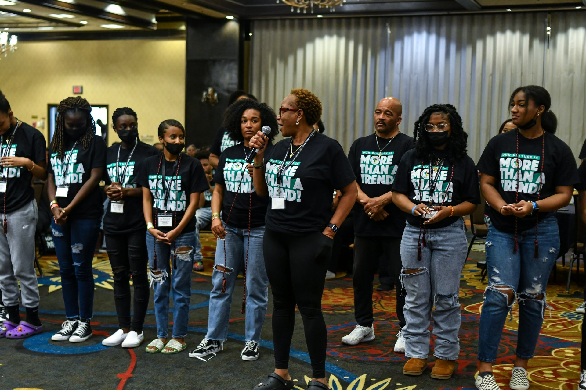
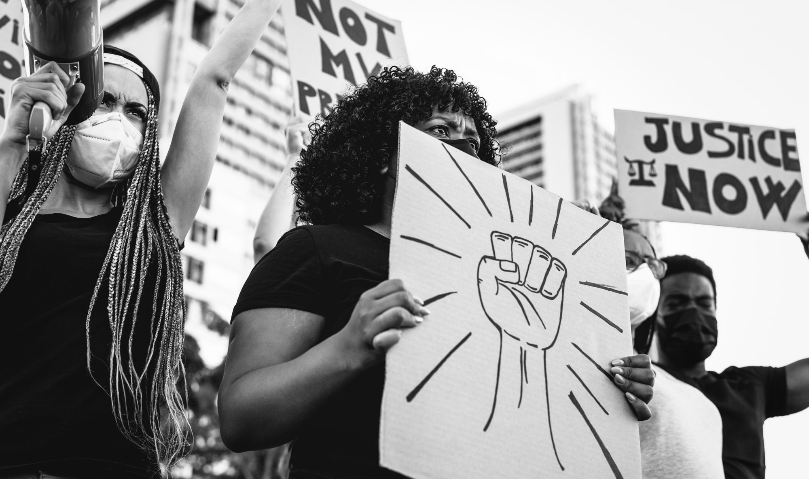
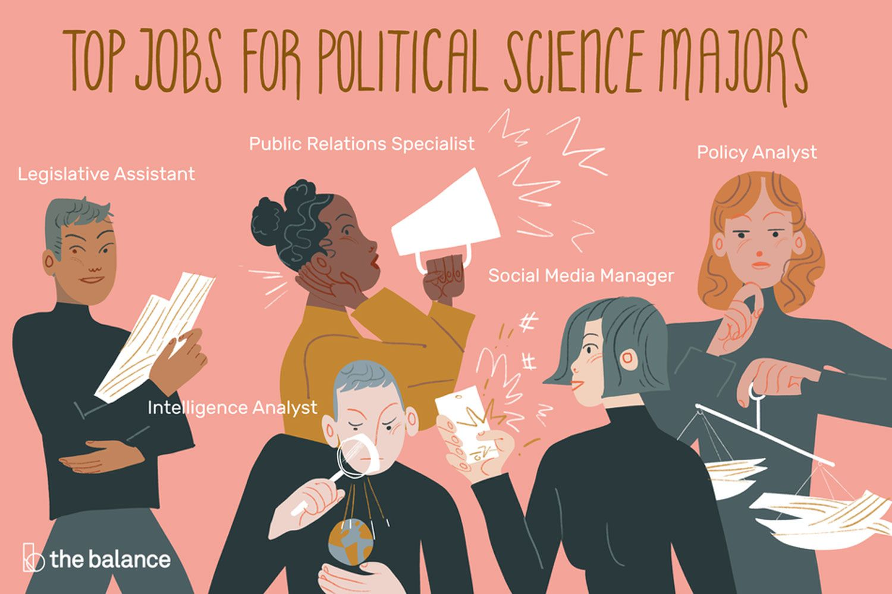
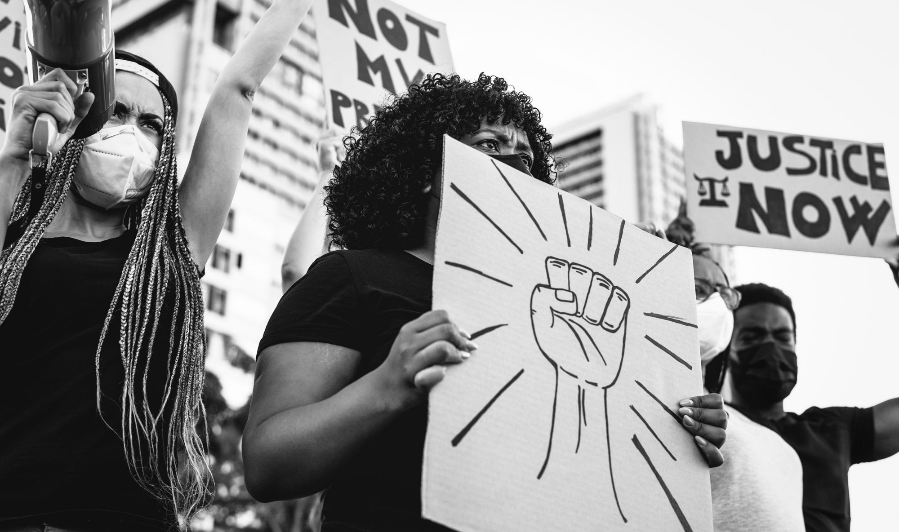
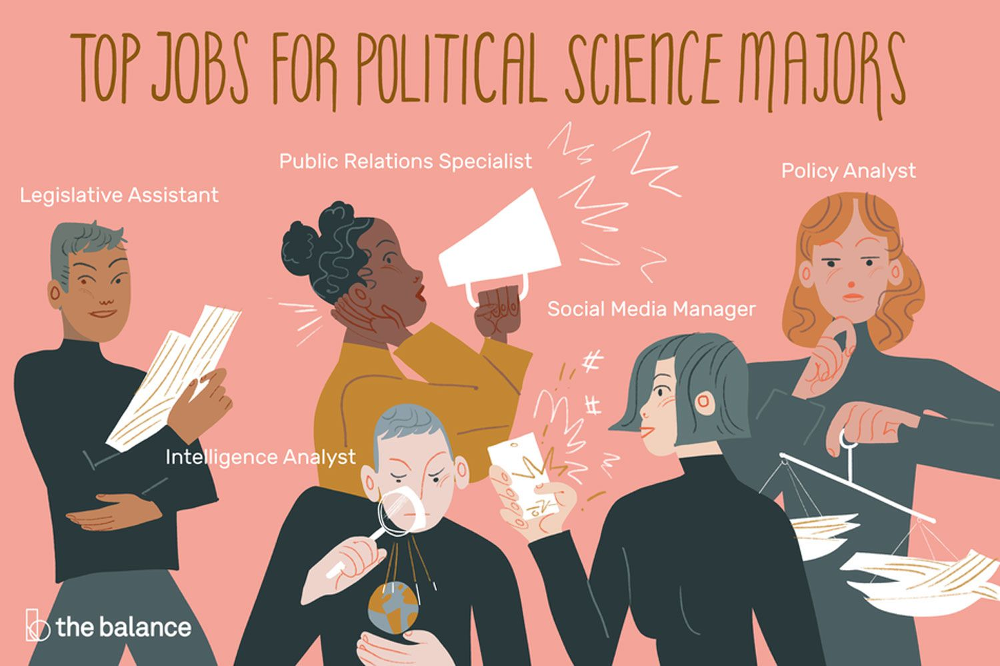

Jordan Norman
My name is Jordan Norman. I currently studying Political Science as an undergraduate at UC Riverside to get my Bachelor’s degree. Hopefully, I want it to develop as Political Science: Law and Society. I started studying here in the Fall of 2022. I am a high school graduate of Eleanor Roosevelt high school in Eastvale, California. After I graduate from college I want to pursue a more activist route or somehow help/improve the black community in any way I can.
My personality type is INTJ which stands for Introvert, Intuitive, Turbulant, and Judging a person. I’m trying to break out of my shell due to my first nature of being an introvert. My hobbies are shopping, listening to music like RnB and Kpop, also I like hanging out with my friends. My zodiac sign is a leo because I was born August 3rd, 2004. What makes me happy is taking mental breaks, watching my comfort TV shows, and eating food. My favorite show is friends because I’ve been watching it since freshman year of high school and just been watching over every now and then.
For my Goals, my #1 is working on my mental health because I’ve been struggling with it since High school and I can’t do what I would want to do if not in the right mental head space so I think mental health is essential for it. My next goal is to find a balance in my life for school and for myself and I need that especially when starting college because I don’t want to feel burnt out at the beginning of my college years. I feel like I need to start eating healthier because I don’t feel great when I eat greasy unhealthy foods. I really want to get my bachelor's degree in Political Science: Law and Society so I can figure out what I want to do to be happy and have a purpose. I want to earn A’s and B’s for my first quarter so I can keep that mindset for the future classes I would like to take later on. This university has had a big impact on my life since I just started. I got better as it is going right now because I was struggling mentally going here because of going through this change. I want to experience more on-campus tho because I have just been going to class and mostly being open to residential life instead of campus life.
The only thing I have done was go to the asp building to look into there and I have gone to the annual block party they plan once a year.Hopefully next year I’ll be more involved and take leadership roles at this university by then. I’ve moved a lot throughout my life but I’ve grown up in Eastvale. I love this place because I have made my best friends that I talk to this day there and most of my family is over or from around there. Most of the time it was black culture and the house I wanted to bring that out in high school which is why I liked helping out in Black Student Union.
Experience
Clubs
• Key Club: Picking up trash and holding fundraisers
• AVID: Holding events for people to learn new skills and get volunteer hours
• Black Students Union: Holding events where we can build in our black community
Personal Assistant
• Taking calls for the person and leaving messages
• Organize all of their files
• Plan out their schedules for the month
• Set up appointments
Education
UC Riverside
Portfolio





